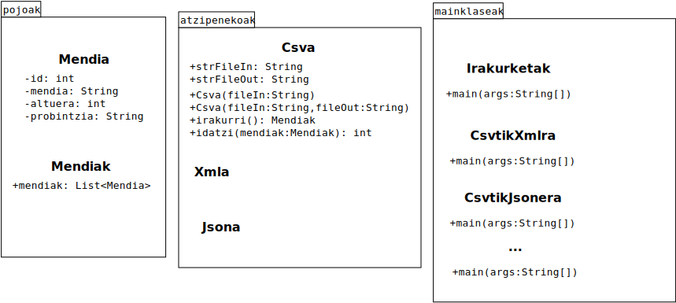

Fitxategien Atzipena => mendienfitxategiak
Proiektu honetan mendien inguruko informazioa irakurri eta idatziko dugu csv, xml eta json fitxategietatik.
Horretarako, oinarrizko atzipenerako klase batzuk izango ditugu eta programetatik- main metodoa daukaten klaseetatik- klase horien metodoei deituko diegu.
Hau izango da proiektuaren klase diagrama:
